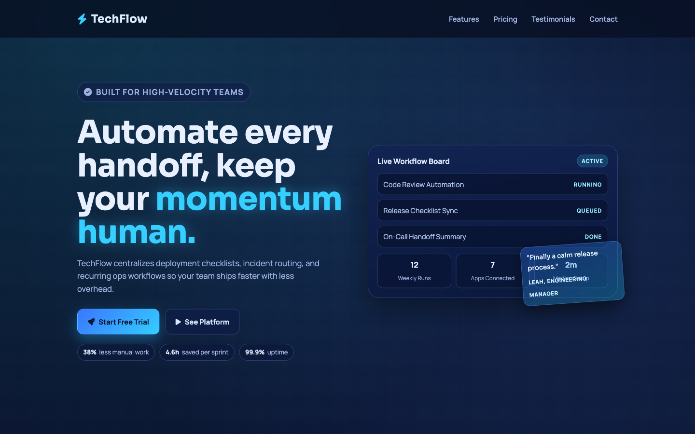

Featured Project 01
TechFlow
SaaS-style product page concept built to practice strong messaging, feature hierarchy, and polished call-to-action placement.
- Balanced hero, feature, and proof sections into a consistent scrolling flow.
- Focused on readable spacing, product framing, and modern card patterns.
- Useful example of front-end presentation work for a software-focused site.
Tech stack